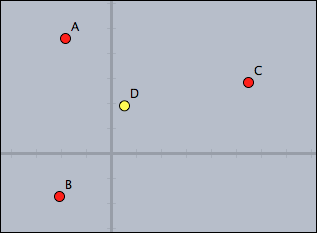 |
//in draw D.xy=(A+B+C)/3; D.color=if(D.x>0, (1,1,0), (0,0,1) )
D.xy に代入することでDの位置が決まります。点Dの色はＤの位置によって if 文で設定されます。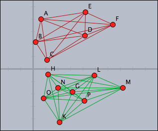 |
//in draw pts=allpoints(); above=select(pts,p,p.y>0); below=pts--above; segs=pairs(above); drawall(segs,color->(0.6,0,0)); segs=pairs(below); drawall(segs,color->(0,0.6,0))
select 演算子により選びだします。それを全体から引くとx軸より下の点が得られます。 pairs演算子で点を２つずつ結びます。~>演算子の働きを見てください。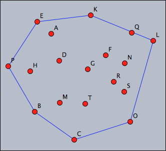 |
//in draw pts=allpoints(); leftof(A,B):=select(pts,p,area(A,B,p)~>0); rightof(A,B):=select(pts,p,area(A,B,p)~<0); isedge(A,B):=(leftof(A,B)==[]%rightof(A,B)==[]); segments=pairs(pts); hull=select(segments,seg,isedge(seg_1,seg_2)); drawall(hull);
leftof と rightof というユーザー定義関数は線分ABのどちら側にあるかで点を分類します。さらにこれを用いて isedge を定義し２つの点のペアが凸型外殻の端となるかどうかを調べます。ここで、あいまいな比較 ~<0 の使い方に着目してください。最後に、すべての端の線を描画します。//in timerstep t=time(); p(x):=(sin(2*pi*x),cos(2*pi*x)); B.xy=p(t_3/60)*4; C.xy=p(t_2/60)*5; D.xy=p((t_1*60+t_2)/(12*60))*3.5; apply(1..12,i,draw(p(i/12)*5)); apply(1..60,i,draw(p(i/60)*5,size->1)); drawtext((3,5),t);
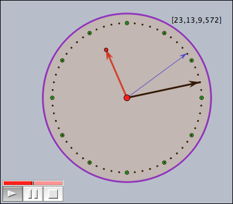 |
time 関数がコンピュータのシステム時間にアクセスするのを利用しています。ｔがリストであることを利用して秒針は1秒ごとに動くようになっています。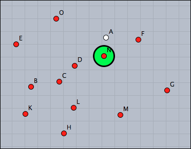 |
//in draw pts=allpoints(); s=sort(pts,|#-A|); p=s_2; draw(p,size->20);
//in draw pts=allpoints()--[A]; s=sort(pts,|#-A|); p=s_1; draw(p,size->20);
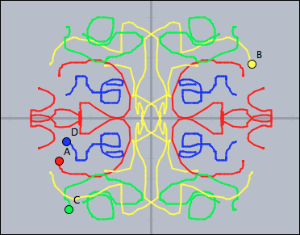 |
//in draw forall(pts,p, p:"trace"=p:"trace" ++ [p.xy] ); tr0=[[1,0],[0,1]]; tr1=[[-1,0],[0,1]]; tr2=[[-1,0],[0,-1]]; tr3=[[1,0],[0,-1]]; trs=[tr0,tr1,tr2,tr3]; forall(trs,t, forall(pts,p, connect((p:"trace")*t,color->p.color,size->2); ); ); //in init pts=allpoints(); forall(pts,p,p:"trace"=[]);
"trace" に、自分自身の軌跡がどんどん追加されていくことを見てください。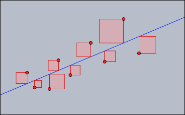 |
//in draw //Least-square line pts=allpoints(); m=apply(pts,(1,#.x)); y=apply(pts,#.y); ma=transpose(m)*m; mb=transpose(m)*y; mainv=inverse(ma); v=mainv*mb; f(x):=v_2*x+v_1; plot(f(x)); //Draw the squares sq(x,y1,y2):=( d=y2-y1; p=((x,y1),(x,y2),(x+d,y2),(x+d,y1),(x,y1)); drawpoly(p,color->(1,0.5,0.5),alpha->0.4); connect(p,color->(.8,0,0)); ); forall(pts,sq(#.x,#.y,(f(#.x))));
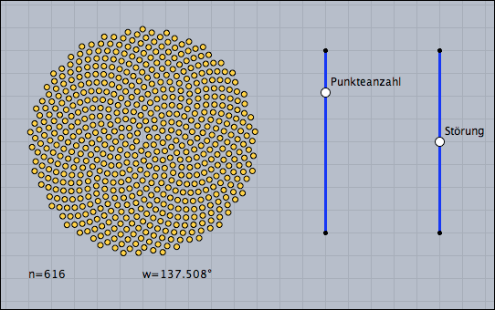 |
//in draw n=round(100*|B,E|); d=0.01*(|D,F|/|D,C|-.5); ang=137.508°+d; repeat(n,i, w=ang*i; r=sqrt(i)*.2; p=(sin(w),cos(w))*r; draw(p,color->(1,0.8,0)); ); drawtext((-5,-6),"n="+n); drawtext((0,-6),"w="+180*ang/pi+"?");
ang=137.508deg.を用いています。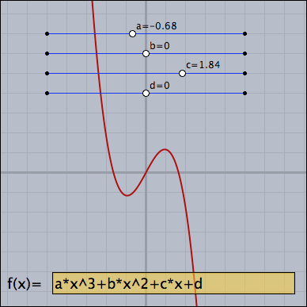 |
//in draw //Parameter sliders a=K.x; b=L.x; c=M.x; d=N.x; drawtext(K+(0.2,0.2),"a="+a); drawtext(L+(0.2,0.2),"b="+b); drawtext(M+(0.2,0.2),"c="+c); drawtext(N+(0.2,0.2),"d="+d); //Parse and plot f(x):=parse(Text0.val); plot(f(x),color->red(0.6),size->2);
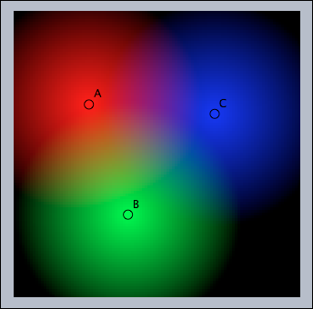 |
//in draw colorplot( (1-|#,A|/4, 1-|#,B|/4, 1-|#,C|/4), (-5,-5),(5,5),pxlres->3 )
colorplot 関数が、平面上の各点における色の混ざり具合を計算します。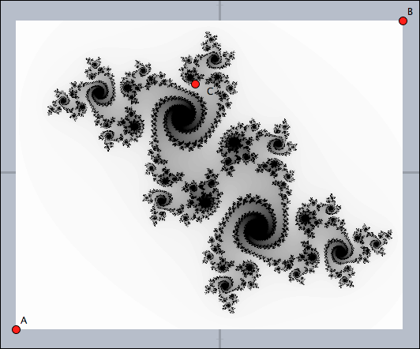 |
//in draw
g(z,c):=z^2+c;
julia(z):=(
iter=0;
while(iter<100 & |z|<2,
z=g(z,complex(C.xy));
iter=iter+1;
);
1-iter/100;
);
colorplot(julia(complex(#))
,A,B,startres->16,pxlres->1);
colorplot 関数が大きな役割を果たします。上のコードで定義されている julia 関数は、各点の色を反復的に計算します。startres と pxlres 修飾子を使うことでより細かい図を描くことができます。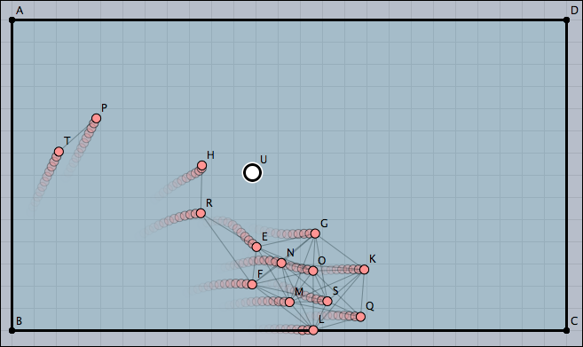 |
//in draw ms=allmasses()--[U]; lim=0.5; apply(ms,m, near=select(ms,p,|p-m|<4); avg=sum(near,m,m.v)/length(near); m.v=m.v+.2*(avg); if(|m.v|>lim,m.v=lim*m.v/|m.v|) //Draw connections apply(near,draw(#,m,color->(0,0,0),alpha->0.2)); );
Page last modified on Thursday 08 of March, 2012 [09:46:52 UTC].
The original document is available at
http://doc.cinderella.de/tiki-index.php?page=Tiny%20Code%20ExamplesJ